The butterflies, rainbows and unicorns of vibe coding ✨
Not everything about AI is butterflies and rainbows. But some of it is. 🦋 🌈 🦄
Ninad Aithal
blackpearl006.github.io/
neuroai-template-demo
A typical neuroimaging project
Ask a question
Find data
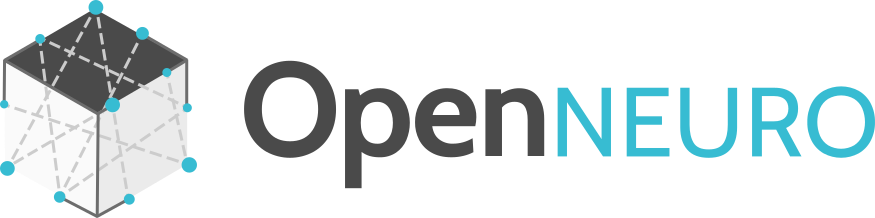
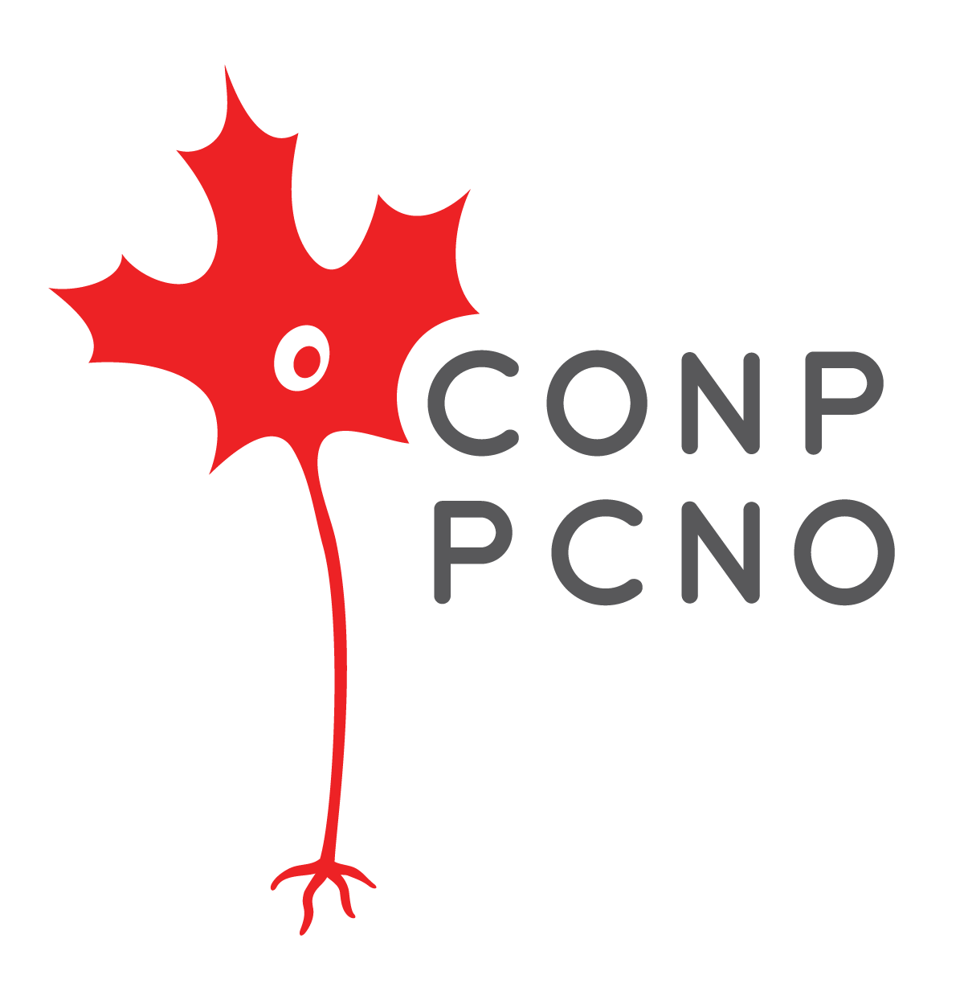
Preprocess
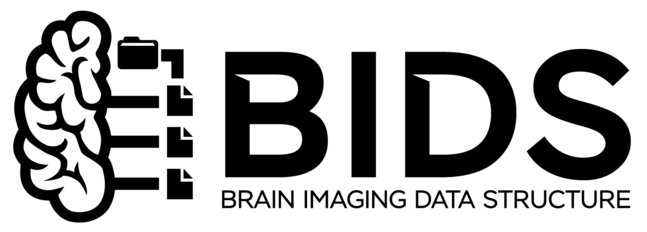
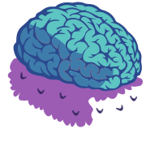
Analyze
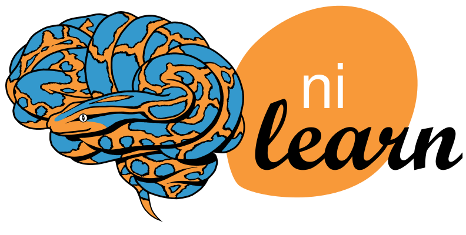
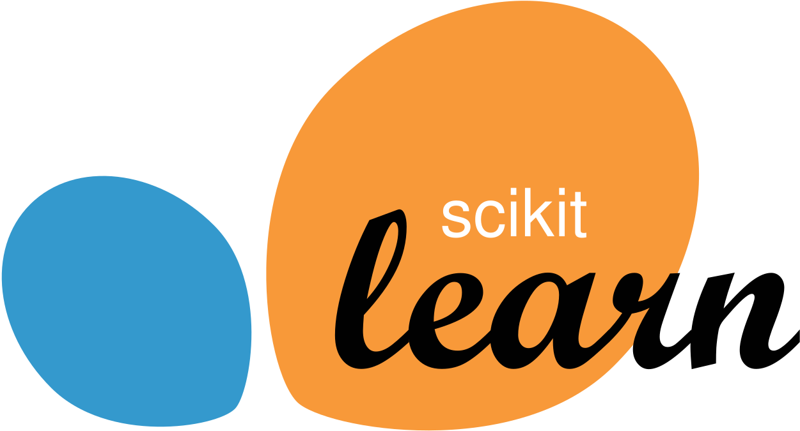
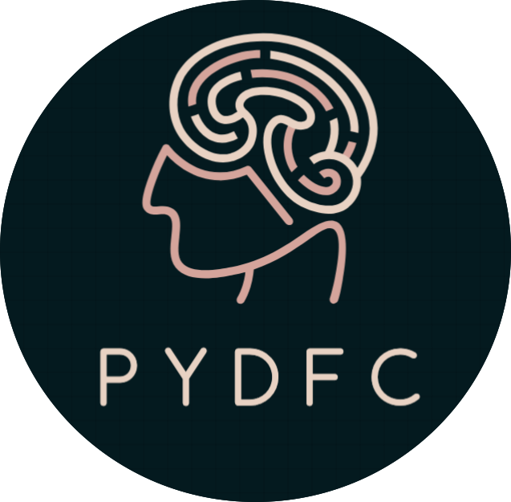
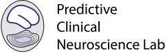
Publish & share

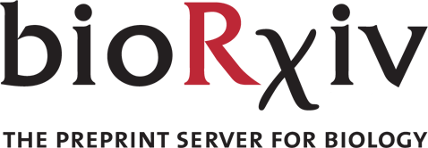
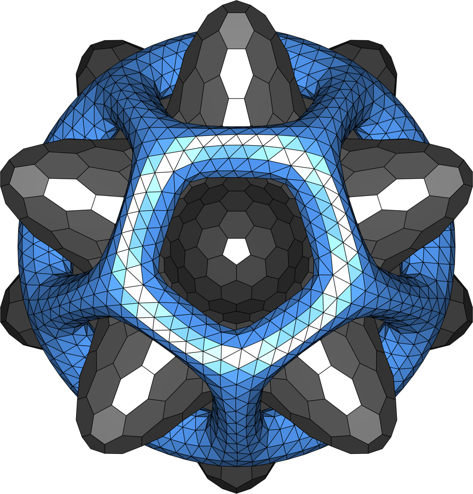
Who actually sees it?
1 PDF among 40,363 on arXiv last month
Getting your work seen is hard
- arXiv got 40,363 submissions in September 2026.
- Since October 1, arXiv takes at most 2 submissions per author per month.
- In computer vision and ML, many NeurIPS and CVPR papers come with a project website.
- Why not papers in Nature or Science Advances? Or from The Neuro and our hospitals?
💡 Your paper's figures are already great website material.
Sources: arXiv monthly submission statistics (arxiv.org/stats/monthly_submissions); F. Jones, "arXiv's new preprint submission cap divides opinion", Times Higher Education, 2 Oct 2026.
Meanwhile, one Saturday morning…
Resets on Tuesday. Burn, burn, burn. 🔥
Research needs to be seen.
I had tokens to burn.
So I built a website template for neuro papers.
It worked because the pieces already existed
NiiVue
A brain viewer that runs in the browser. Recent, stable and fast. It does the hard part.
Clarity template
A minimal, hackable research page by Shikun Liu. The design started there. Thank you!
My groundwork
Two earlier NiiVue sites, NeuroDataHub (Vue + Clarity) and web coursework. I knew enough to steer.
From scratch, this would have been bad. Adapting good tools made it good.
Built with Vite, React, Tailwind, Three.js and NiiVue.
From a static figure to a brain you can rotate
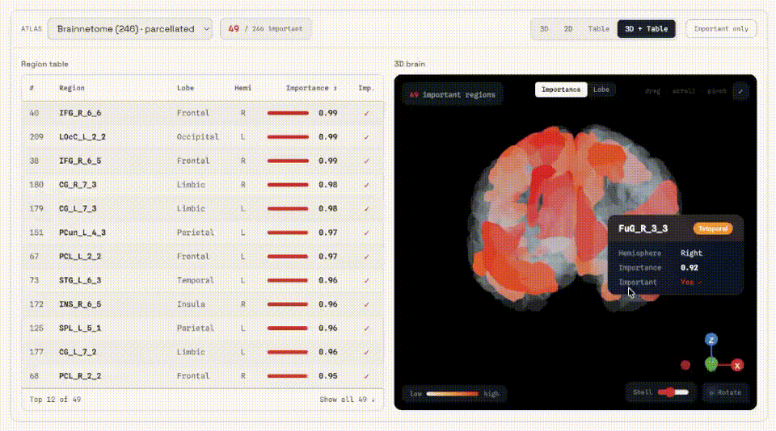
Atlases: Brainnetome, Schaefer-400, AAL, Harvard-Oxford, Yeo, Glasser
Make it yours in three steps
Put your results in a CSV. One row per region:
region,value. Often it's already in your supplement.Give your agent the paper and
AGENTS.md. Or edit the text files by hand. No code.Push to GitHub. GitHub Pages puts it online.
✨ Key takeaway: Give it your paper → get a website.
Give it your paper. Get a website.
Why this is a good job for AI
- No human data. Only processed results that are already published.
- Low stakes. If a page breaks, nobody gets hurt.
- No maintenance. It only has to stay online.
- Without AI, I would not have built this. I'd have minded my own business.
Some of it is butterflies and rainbows.
🦋 🌈 🦄
Let's talk
- Where has AI been plainly good for you?
- What stops you from putting your paper on a website?
- Does it matter if nobody maintains code like this?
- Could you tell these slides were made with AI?
Website
Code on GitHub
Backup slides
Region-level results, the way clinicians think
- Every region has a name, a value and a place in 3D.
- Sort the table, then find the same region on the brain.
- Precision-medicine results become easier to inspect and to discuss.
This deck has an evil twin
Press T.
Same words, same slides. One looks like a person made it. One looks like every AI deck you've seen this year.